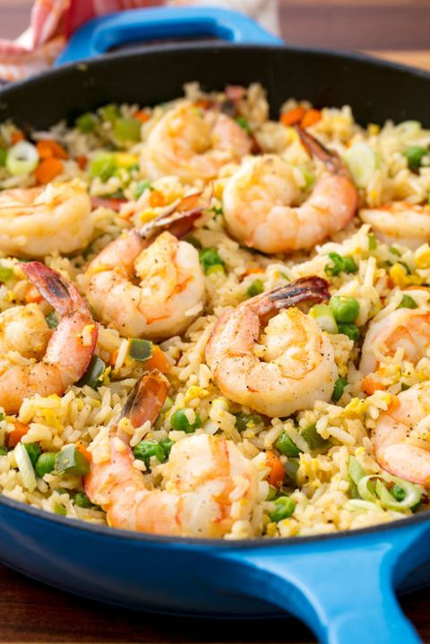

Fried Rice with shrimp
Fried Rice with Shrimp
Pasta pesto
Ceasar salade

Ingrediënten
- 2 grote eieren
- Zout
- 500 gr schoongemaakte grote garnalen rauw
- 3 el plantaardige olie
- 4 bosuitjes
- 2 grote teentjes knoflook gehakt
- 2 tl verse gember geraspt
- 400 gr gekookte en afgekoelde witte rijst
- 250 gr bevroren doperwtjes
- 2 el tamari of sojasaus
- 1 tl sesamolie
Instructies
1. Doe de eieren in een kleine kom met zout en peper en klop even door met een vork
2. Dep de garnalen droog met keukenpapier, besprenkel dan met peper en zout
3. Bak de garnalen aan in een grote wok of anti aanbak pan op medium hoog vuur. Roerbak tot de garnalen doorschijnend roze zijn. Haal uit de pan en zet apart.
4. Voeg het wit van de bosuitjes toe, de knoflook en de gember en roerbak dit even kort.
5. Voeg 2 eetlepels van de olie toe en laat even goed heet worden. Voeg de rijst en de doperwten toe, besprenkel met de tamari of soja saus en roerbak tot de rijst heet is. 2-3 minuten.
6. Schuif het rijstmengsel naar een kant. Doe nog wat van de olie aan de andere kant en voeg de eieren toe. Roerbak deze tot ze bijna gaar zijn ongeveer 1-2 minuten Voeg de garnalen weer toe.
7. Haal de pan van het vuur. Besprenkel met de sesamolie, strooi de bosuitjes erover en roer alles door zodat het ei door de rijst heen gaat. Proef en doe er peper en zout bij indien nodig.